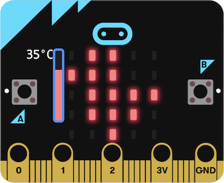

Ⅱ LEDアニメーションを作ろう
テーマ概要
インタラクティブに変化するLEDアニメーションを制作。

-
第２回 micro:bitプログラミング入門
-
第３回 LEDの表示を自動で変化させる
-
第４回 LEDの表示をスイッチ入力で変化させる
-
第５回 様々なセンサ入力を利用する
-
第６回 サウンドで演出する
-
第７回 オリジナルの作品を制作する
今回の目標
MakeCodeを使ってプログラミングの基本をつかむ。

-
micro:bitのプログラミング構造について理解する。
-
関数、引数、変数、条件分岐、繰り返しについて理解する。
-
綺麗で分かりやすいソースコードを書く。
関数 とは
コンピュータに対する命令。
-
コンピュータが命令を処理することを関数の実行と呼ぶ。
-
あらかじめ定義（用意）された関数と、自分で定義する関数がある。
-
MakeCodeには、様々な関数を表すブロックがあらかじめ定義されている。
//関数の実行
//記述順に実行される。
function1(arg)
function2()
//関数の定義
function1(arg: number): number {
return subfunction(arg)
}関数の実行と引数
引数を渡すことで様々な命令ができる。
-
関数の実行に必要な値（ここでは"文字列1"、"文字列2"）を引数と呼ぶ。
-
引数のおかげで、任意の文字列を表示することができる。
//関数の実行と引数
basic.showString("文字列1")//文字列1を表示
basic.showString("文字列2")//文字列2を表示文字列を一度だけ表示させてみよう。
-
「文字列を表示」ブロックは、basic.showString("Hello!") という関数を表す。
-
好きな文字列を表示させよう。
文字列を繰り返し表示させてみよう。
-
「ずっと」ブロックの中身は、繰り返し実行される。
-
「ずっと」ブロックは、basic.forever(function(){処理内容})を表す。
-
「ずっと」ブロックの中身は、繰り返し実行される。
-
「ずっと」ブロックは、basic.forever(function(){処理内容})を表す。
ドキドキハートの周期を変えてみよう。
-
「アイコンを表示」ブロックは、basic.showIcon(IconNames.Heart)
という関数を表す。
-
この関数は表示時間を表す引数を追加することができる。
//ドキドキハートの周期を変えてみよう。
basic.forever(function() {
//IconNames.Heartの横に、
//", 200"を加えると、表示時間を指定できる
basic.showIcon(IconNames.Heart, 200)
basic.showIcon(IconNames.SmallHeart, 200)
})
-
「アイコンを表示」ブロックは、basic.showIcon(IconNames.Heart) という関数を表す。
-
この関数は表示時間を表す引数を追加することができる。
//ドキドキハートの周期を変えてみよう。
basic.forever(function() {
//IconNames.Heartの横に、
//", 200"を加えると、表示時間を指定できる
basic.showIcon(IconNames.Heart, 200)
basic.showIcon(IconNames.SmallHeart, 200)
})
数字を0から順番に表示させてみよう。
-
表示する値の入れ物（変数）を用意する。
-
数字を表示する関数に変数を代入し、変数の中身を1ずつ増やす。
変数の宣言と代入
変数を使うことで、処理を効率的に記述できる。
-
変数の宣言
変数を初めて使う際に必要。"let"や"const"などがある。
-
変数名
プログラマが名付けることができる。
//関数の実行と変数
①let ②num ③= 0
basic.forever(function () {
basic.showNumber(num)
num ④+= 1
})変数の宣言と代入
変数を使うことで、処理を効率的に記述できる。
-
値の代入 "="
右の値を左に入れることを表す。
-
足して代入 "+="
変数の値を右の値だけ増やして代入することを表す。
//関数の実行と変数
①let ②num ③= 0
basic.forever(function () {
basic.showNumber(num)
num ④+= 1
})カウントダウンタイマーを作ろう。
-
例題3を数字が減るように改変する。
-
0になったらアイコンを表示させる。
-
作成したプログラムをClassroomに提出。
条件分岐とif文
もし〜なら〜。という処理は条件分岐と呼ばれる。
-
条件式
真か偽のどちらかになる式。
-
条件式が真の時に実行する処理。
-
条件式が偽の時に実行する処理。
//条件分岐
if (count > 0) {//①countが0より大きかったら、
basic.showNumber(count, 200)//②countを表示
count -= 1//②countを1減らして再代入
} else {//③そうでなかったら（countが0以下なら）、
basic.showIcon(IconNames.Skull)//③ドクロを表示
}明るさがドキドキ変化するハートを作ろう。
-
ハートの明るさを脈打つように変化させる。
-
明るさの値を少しずつ変えて繰り返し設定する。
-
作成したプログラムをClassroomに提出。
繰り返しとfor文
似たような処理を繰り返す時は、for文を用いる。
-
カウンタ
繰り返し回数を表すための変数。
最初に0にしておく。 -
条件式
繰り返し回数を決める条件式。
真の間だけ{ }の中を繰り返す。
//条件分岐
for (①let index = 0; ②index <= 255; ③index++) {
led.setBrightness(255 - index)
basic.pause(1)
}繰り返しとfor文
似たような処理を繰り返す時は、for文を用いる。
-
{ }内の処理を終えた後に実行する処理。
普通はカウンタを1増やす処理を書く。
(インクリメント）
//条件分岐
for (①let index = 0; ②index <= 255; ③index++) {
led.setBrightness(255 - index)
basic.pause(1)
}コメント
ソースコードに注釈をつける。
-
//を先頭につけた行は、コンパイル時に無視される。
-
複数行コメントは、/*と*/で囲む。
//数値表示用変数の宣言
let num = 0
//数字を1から順番に表示し続ける
basic.forever(function() {
/* "num++"は、引数に代入した後に
インクリメントすることを表す */
basic.showNumber(num++);
})注釈を入れてみよう。
-
例題3の2行目に、ソースコードの概要を加えよう。
-
4-5行目に、関数内の具体的な処理について説明しよう。
-
作成したプログラムをClassroomに提出。
コメントアウトしてみよう。
-
動作確認のために特定の関数を一時的に無視することをコメントアウトと呼ぶ。
-
例題3の9行目をコメントアウトし、動作の違いを確認してみよう。
インデント
可読性を向上させるための字下げをする。
-
tabキーを押して、ソースコードの階層を見やすくする。
-
shift+alt+Fで、インデントを自動でつけられる。
//×インデントなし
basic.forever(function(){
subFunction()
})
//○インデントあり
basic.forever(function(){
subFunction()
})見にくいコードと見やすいコード
-
関数や"="の前後のスペースはなくても良いが、可読性の観点からつけるべき。
-
変数宣言キーワードと変数名の間にはスペースが必要。
-
引数が多い時は改行することもあるが、そうでない場合は可読性が悪くなる。
//コンパイルは通るが、見にくいコード
let num=0
const arg1=
"arg1"
const arg2="arg2"
basic.
forever(function(){
subFunction(arg1,
arg2, num)
num
+=1}
)よくあるエラー
ひたすら自分の手でコードを書き写し、エラーと闘うべし。
-
括弧、中括弧が足りない or 多い。
-
全角が混ざっている。特に全角スペースは気づきにくい。
-
スペルミス。
//よくあるエラー
basic.foever(function(){
myFunction(arg1, arg2)
})
}今回のまとめ
MakeCodeを用いて基本的なコーディングを練習。
-
micro:bitのプログラミング構造について説明。
-
関数、引数、変数、条件分岐、繰り返しについて学習。
-
綺麗で分かりやすいソースコードの書き方を練習。